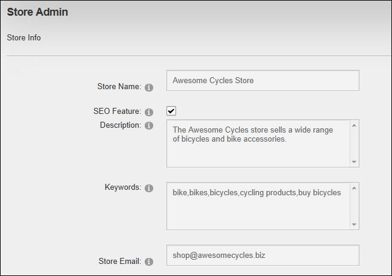
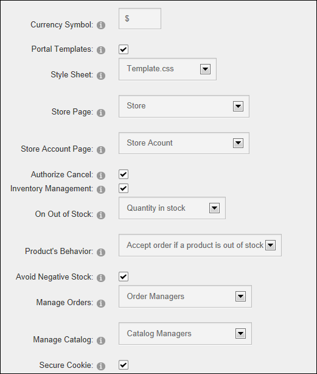
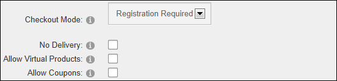
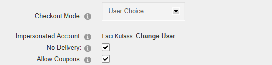
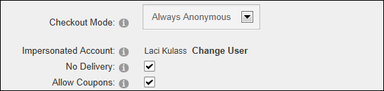
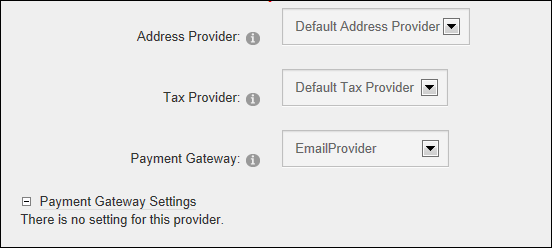

Setting Store Info
How to set the general information of the store as displayed in the Store and the Shopping Cart pages of the Store module.
Note: You can configure the Store to enable one or more roles to manage orders or manage the catalog (reviews, products and categories). If you would like to set this up now, you should create those roles (See "Adding a Security Role (Basic Settings)") and add the users to those roles (See "Deleting a User from a Security Role") before beginning this tutorial. Alternatively, you can set up these permissions at any time.
- Go to the Store Admin module.
- If the Store Info page isn't displayed, click the Store Info link.
- In the Store Name text box, enter a name for your store. E.g. Awesome Cycles Store
- Recommended. At SEO Feature, select from these options:
- Mark
 the check box to inject the Store Name, Description and Keywords into the corresponding META fields of the page where the catalog module is placed. This allows a better indexing by search engines and produces higher ranking. When product details are displayed, the product's fields model name, summary and keywords are used.
the check box to inject the Store Name, Description and Keywords into the corresponding META fields of the page where the catalog module is placed. This allows a better indexing by search engines and produces higher ranking. When product details are displayed, the product's fields model name, summary and keywords are used.
- In the Description text box, enter a description of your store.
- In the Keywords text box, enter one or more key words or phrases separated by a comma.
- Unmark
 the check box to disable.
the check box to disable.
- In the Store Email text box, enter the email address to be used in emails sent by the store. Order details will also be sent to this address.

- In the Currency Symbol text box, enter the symbol to be displayed for product prices. E.g. $
- Optional. At Portal Templates, to enable site templates on your store.
- At Style Sheet, select the style sheet to be used for the store.
- At Store Page, select the page name where the Store Catalog and Store Menu modules are located.
- At Store Account Page, select the page name where the Store Account module is located.
- Optional. At Authorize Cancel, to enable customers to cancel their orders.
- Optional. At Inventory Management, to enable inventory management. This displays these additional fields:
- At On Out of Stock, select the message to be displayed when a product is out of stock. Note: This feature only works when the [STOCKQUANTITY] token is used in templates.
- At Product's Behavior, select the behavior for out of stock products from these options:
- Accept order if a product is out of stock
- Hide quantity, links and buttons. This hides the field quantity, links/buttons "Add to Cart" and "Buy now!"
- Hide the Product
- Optional. At Avoid Negative Stock, to enable an additional availability test to be performed when a product is added to shopping cart. Note: There is no guarantee of stock availability due to the nature of the Internet.
- At Manage Orders, select the role which is allowed to manage orders. By default, Administrators and SuperUsers are allowed to manage orders.
- At Manage Catalog, select the role which is allowed to manage products, categories and reviews. By default, Administrators and SuperUsers are allowed to manage these.
- Optional. At Secure Cookies, to encrypt cookie values.

- At Checkout Mode, select one of the following options:
- Registration Required: Select if shoppers must be registered users to complete the checkout process.
- Optional. At No Delivery, if there is no delivery option available. This will disable shipping management. Note: If you do provide delivery and are selling both virtual and physical products, you will need create a Virtual Products shipping rate with a zero cost to handle virtual products. See "Adding Shipping Rates"
- Optional. At Allow Virtual Products, to allow virtual products. Registration is required for virtual products because a user account is required to save the download counter.
- Optional. At Allow Coupons, if discounts are available using shopping coupons.

- User Choice: Select if shopper can be either registered users or anonymous users to complete the checkout process.
- At Impersonated Account, select the security role and then the user within that role whose account will be used for processing orders by anonymous users.
- Click the Validate User link to ensure the user account is valid.
- Optional. At No Delivery, if there is no delivery option available. This will disable shipping management.
- Optional. At Allow Coupons, if discounts are available using shopping coupons.

- Always Anonymous: Shopper are always anonymous when completing the checkout process.
- At Impersonated Account, select the security role and then the user within that role whose account will be used for processing orders by anonymous users.
- Click the Validate User link to ensure the user account is valid.
- Optional. At No Delivery, if there is no delivery option available. This will disable shipping management.
- Optional. At Allow Coupons, if discounts are available using shopping coupons.

- At Address Provider, select the address provider to use.
- At Tax Provider, select the tax provider to use.
- At Shipping Provider, select the shipping provider to use.
- At Payment Gateway, select the payment gateway provider to use. If EmailProvider is selected, you can skip to Step 21. All other providers require additional configuration. The additional settings that must be configured will be displayed in the Payment Gateway Settings section. See "Configuring Atos as the Payment Gateway", See "Configuring Authorize.Net as the Payment Gateway" and See "Configuring PayPal as the Payment Gateway Provider".

-
Click the Update button. This displays the Orders, Categories, Products, Reviews and (optional) Coupons links at the top of the Store Admin module and the Address Provider Settings, Tax Provider Settings, and (optional) Shipping Provider Settings sections at the base of the module.
Next Steps:
-
See "Adding Shipping Rates"
-
See "Managing Taxation on Orders"